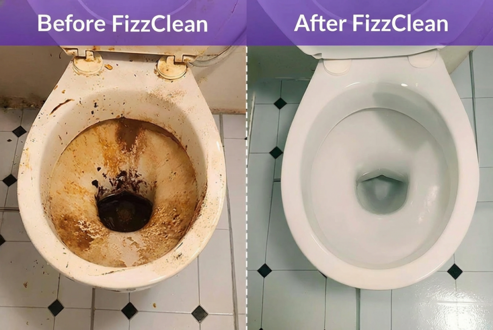

Why thousands of Americans swear by this toilet foam—developed by a American chemist
Robert Whitfield's revolutionary foam formula cleans up American bathrooms. No scrubbing, no harsh chemicals—just wait 60 seconds and rinse.
Do you think your toilet is clean? The shocking truth will prove you wrong.
Everyone cleans their toilet regularly. Brush it, scrub it, flush it—done. Looks clean, right?
But scientists warn: What you see is only a fraction of the truth.

The real problem lurks where you can't see it—and where no brush in the world can reach.
Under the rim of the toilet. Deep in the microscopic pores of the ceramic. In the water deposits that build up over months. This is exactly where an invisible biofilm of bacteria, urine scale crystals, and fecal bacteria forms.
This biofilm is the real hygiene problem – and conventional cleaners can't reach it.
What most people don't know:
Problem #1: Your toilet brush spreads bacteria instead of removing it
Studies by Stanford University show that the average toilet brush carries over 1.3 billion fecal bacteria. Every time you scrub, you spread these bacteria in your toilet – and in the air of your bathroom.
Problem #2: Invisible urine scale grows beneath the surface
What you see as a "yellow rim" is just the tip of the iceberg. Urine scale crystals grow into the ceramic pores – similar to mold in a wall. Superficial scrubbing only removes what is visible, while the problem continues to grow beneath the surface.

Problem #3: Odors do NOT come from the bowl
The typical "toilet smell" does not originate in the toilet water, but in the bacteria colonies under the rim and in the drain pipes. That's why air fresheners only help for a short time – the source of the odor remains.
Problem #4: Chemical cleaners leave an invisible film
Most toilet cleaners contain surfactants that leave a thin film on the ceramic. This film literally attracts dirt – your toilet gets dirty again faster than it should. A vicious circle.
Problem #5: You breathe in the bacteria
When flushing, microscopic water droplets containing bacteria are thrown up to 1.8 meters into the air. These "aerosols" settle on toothbrushes, towels, and—yes—even in your lungs.
The hidden health hazard
Many people suffer from recurring respiratory infections, skin irritations, or unexplained gastrointestinal problems—without realizing that the cause lies in their own bathroom.
Particularly affected: families with children, people with weakened immune systems, and anyone who shares a toilet with several other people.
Why previous solutions fail
Normal toilet cleaners only work on the surface. They cannot penetrate the biofilm, cannot reach hidden bacteria nests, and often leave behind more problems than they solve.
The result: you clean more and more often, with increasingly aggressive agents – and the problem still doesn't get any better.
This is precisely where Robert Whitfield's story begins.
The American chemist recognized these hidden problems when his wife ended up at the doctor's with irritated airways after a marathon bathroom cleaning session.
"At that moment, I realized that the problem isn't that people don't clean enough. The problem is that they clean incorrectly—with the wrong products."
Robert Whitfield and his wife Sophie. They were the first to test FizzClean at home.
Whitfield began his research. Not for a "stronger" cleaner. But for a smarter one.
His solution: a foam that creeps into every nook and cranny, dissolves biofilm from the inside, kills bacteria, and neutralizes odors at the source—without you ever having to pick up a brush.
The result: FizzClean.
Below, you'll learn how this revolutionary foam formula works, why even microbiologists are enthusiastic about it, and why thousands of Americans swear: "I didn't know my toilet was so dirty until I used FizzClean."
How exactly does FizzClean™ work?
The secret lies in the patented micro-foam expansion technology:
- FizzClean™ generates millions of microscopic foam bubbles (0.05–0.2 mm in diameter)
- These bubbles carry highly concentrated enzymes and oxidizing agents
- The foam creeps into every nook and cranny on its own—under the rim, into pores, into grooves
- There, the enzymes dissolve the biofilm, while chelating agents destroy urine scale and limescale from the inside

This method is scientifically proven: the combination of enzymatic decomposition and oxidative bacteria elimination achieves a 99.9% reduction in bacteria (confirmed by the Stanford Institute, 2023).
Important: Unlike liquid cleaners, which simply run off, the foam uses capillary forces – it is literally sucked into hidden areas. After 20 minutes, everything is dissolved – you just rinse away what the foam has already destroyed.
Safe, non-toxic, easy to use—and ideal for any bathroom
FizzClean™ is designed so that anyone can use it—no gloves, no protective mask, no harsh fumes. Just sprinkle it on, wait, rinse—the rest happens automatically.
Areas of application:
- ✅ Toilets
- ✅ Bathtubs & showers
- ✅ Sinks & fittings
- ✅ Tiles & joints
- ✅ Garbage cans & drains
Is FizzClean™ harmful to humans or the environment?
A resounding no! – You can even use it without gloves.
FizzClean™ works with an enzymatic-oxidative formula that is biodegradable and pH-neutral. Unlike aggressive acid cleaners (such as WC-Ente with a pH of 1–2), FizzClean™ has a skin-friendly pH value of 5.5–6.5.
The ingredients are dermatologically tested, chlorine-free, and bleach-free. There are no corrosive fumes, no skin irritation, and no harmful residues in the wastewater.
For comparison: Conventional toilet cleaners often contain hydrochloric acid, chlorine, or ammonia—substances that require you to open the window and leave the room. FizzClean™ simply smells fresh with an ocean scent and is 100% septic tank friendly.
The result:
- No corrosive fumes
- No skin irritation
- No effort—but a hygienically clean toilet that is truly clean, not just looks clean
Here are just a few examples of what people who have purchased FizzClean™ have to say:
"I am 67 years old and have had problems with my knees for years. Scrubbing the toilet was always a pain—I had to kneel down, scrub with all my strength, and still the yellow stains remained under the rim. A friend told me about FizzClean™, and I thought, "I might as well give it a try." When I used the powder for the first time, I was skeptical—just sprinkle it in and wait? But when I flushed after 20 minutes, I couldn't believe my eyes. The toilet was sparkling clean, even the stubborn limescale stains were gone. I didn't have to scrub once! Since then, I've only used FizzClean™—my knees are grateful, and my bathroom finally smells fresh."
"I clean regularly—honestly! But I always had the feeling that it wasn't really getting clean. When I used FizzClean™ for the first time and the foam spread, I suddenly saw how much dirt was hidden under the rim—deposits that I had never been able to reach with the brush. After rinsing, the toilet was as bright white as new. And best of all, the unpleasant smell that I thought was 'normal' has completely disappeared. Now I know that my toilet was never really clean before. FizzClean™ opened my eyes!"
"At first, my kids just laughed when I came home with FizzClean™. 'Dad and his miracle cures from the internet,' they said. But when they saw how the foam works—how it pushes itself under the rim, how the stains just disappear—they were speechless. Now they even ask for the 'magic powder' themselves when they have to clean their own bathroom. The great thing is: you don't have to do anything. Just add the powder, keep watching Netflix, rinse in between – done. No more harsh fumes, no more sore arms from scrubbing. I now have three cans at home because I never want to be without it again."
Is the application complicated?
No—it couldn't be easier!
FizzClean™ requires no instructions, no protective equipment, and no preparation. Simply add 1 tablespoon of powder to the toilet, wait 20 minutes (during which time you can do whatever you want—drink coffee, hang up laundry, relax), and then flush once. Done.
No scrubbing. No brush. No sore knees.
The foam does all the work itself – you literally don't have to do anything except wait and flush. Even people with limited mobility, back problems, or joint pain can keep their toilet clean with ease.
Cleaning the toilet has never been so easy.
Where can I buy FizzClean™?
Only available in the official FizzClean™ shop
FizzClean™ can only be ordered directly from the manufacturer in the official web shop. It is not sold on Amazon, Walmart, Target, or other platforms.
Important: There are already numerous imitations in circulation that look similar but do not work—cheap powders without the patented micro-foam technology developed by Robert Whitfield. These counterfeits do produce foam, but without the enzymatic active ingredients, they do not provide deep cleaning.
Therefore, only trust the original – developed and produced in America – and order FizzClean™ exclusively from the official store.
Why not retail?
"I could have been selling FizzClean™ to drugstore chains for a long time. But then we would have to double the price – for middlemen, storage costs, shelf space. I want everyone to be able to afford clean hygiene, not just people with big budgets. That's why we sell directly." — Robert Whitfield
UPDATE: SPECIAL SALE
The company is currently running a special sale. You can get 50% off if you buy it today, only from the official website. Time is running out, and the special sale is coming to an end. Don't miss this opportunity to improve your life at an unbeatable price!
Check Availability NowPRODUCTION NOTICE
"Demand for FizzClean™ is currently exceptionally high," explains developer Robert Whitfield. "Our production takes place in America under strict quality controls—each batch is tested in the laboratory before it is shipped. The enzymatic active ingredients must be precisely dosed, otherwise the formula will not work. For us, effectiveness comes first, not quantity. That's why FizzClean™ is often temporarily sold out – it's already happened seven times this year alone. If the item is currently unavailable in the shop, we ask for your understanding – it is usually back in stock after one to two weeks."